5.4. cpviz: how to visualize the search
To get a better feeling of the way the CP solver explores the search tree, we will use the wonderful open-source visualization toolkit for finite domain constraint programming cpviz. Here is a description from their website of what this toolkit provides:
It provides visualization for search trees, variables and global
constraints through a post-mortem analysis of trace logs.
The important trick to understand is that the visualization is only available after the search is done.
Please find all necessary information and tools at:
http://sourceforge.net/projects/cpviz/
5.4.1. TreeMonitors to provide the cpviz input
C++ code: tutorials/cplusplus/chap5/nqueens3.cc
To monitor the search, we use SearchMonitors. To produce the files needed by cpviz to visualize the search, we use a specialized SearchMonitor: the TreeMonitor class. cpviz needs two files as input: tree.xml and visualization.xml.
To produce these two files, add a TreeMonitor among your SearchMonitors in your code:
vector<SearchMonitor*> monitors;
...
SearchMonitor* const cpviz = s.MakeTreeMonitor(vars, "tree.xml",
"visualization.xml");
monitors.push_back(cpviz);
You need also a configuration file (named configuration.xml) as this one:
You can download it here.
<?xml version="1.0" encoding="UTF-8"?>
<configuration version="1.0" directory="/tmp"
xsi:noNamespaceSchemaLocation="configuration.xsd" xmlns:xsi="http://
www.w3.org/2001/XMLSchema-instance">
<tool show="tree" type="layout" display="expanded" repeat="all"
width="700" height="700" fileroot="tree"/>
<tool show="viz" type="layout" display="expanded" repeat="all"
width="700" height="700" fileroot="viz"/>
</configuration>
Basically, it tells cpviz to produce the graphic files for the search tree (show="tree") and the variables (show="viz") in the directory /tmp.
If you are really lazy, we even provide a factory method which generates automatically a default configuration file:
SearchMonitor* const cpviz = s.MakeTreeMonitor(vars,
"configuration.xml",
"tree.xml",
"visualization.xml");
After your search is finished AND you have called (implicitley or explicitly) EndSearch()[1], you can run cpviz to digest the XML files representing your search by entering the viz/bin directory and typing:
java ie.ucc.cccc.viz.Viz configuration.xml tree.xml visualization.xml
on a command line into a terminal near you. This will produce the following picture of the search tree:
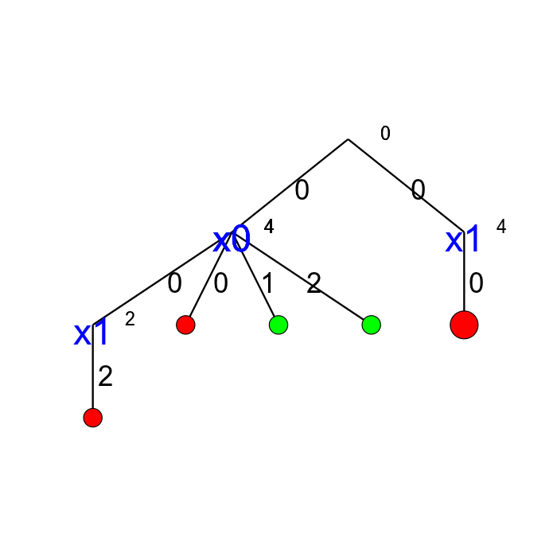cpviz produces the construction of the search tree, step by step. In our case we try to solve the
n-queens problem with  and cpviz
generates 8 files.
and cpviz
generates 8 files.
You can find an animated version of the search tree produced by cpviz here.
{kind=link}
| [1] | tree.xml and visualization.xml are generated in the ExitSearch() callback of the TreeMonitor class. |
This is probably not what you expected. First of all, this is not a binary tree and there seems to be an extra dummy root node. A binary tree — which is what is exactly constructed during the search — is not really suited for a graphical representation as it can quickly become very big (compare the tree above with the actual search tree that is represented below). To avoid huge trees, we have reduced their sizes by contracting several nodes. Except for the dummy root node, each node corresponds to a variable during the search and only left branches are given explicitly. The numbers along the branches denote the applied decisions (like 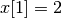) and the numbers in the right corner above the variable names of the nodes are the number of values left in the domain of the corresponding variable just before the decision was taken. Nodes coloured in
- green denote feasible solutions;
- red denote sub-trees without any feasible solutions;
- blue denote intermediate try nodes (these only exist during the search).
5.4.2. Interpreting the graphical results
C++ code: tutorials/cplusplus/chap5/nqueens4.cc
To better understand the output of cpviz and to follow the search with precision, let’s trace the search and the propagation of our program nqueens4:
./nqueens4 --size=4 --cp_trace_search --cp_trace_propagation 2>
cpviz_nqueens4_basic.txt
We redirect std::err into the file trace_propagation.txt (this what the 2> stands for). You can find a cleaned version of this file here.
We will transcribe the information contained in the file cpviz_nqueens4_basic.txt but in a more graphical way. Pay attention to the order in which the variables and the constraints are processed.
Recall that we are solving the problem of finding all distinct solutions
of the n-queens problem with  queens. Our search strategy is to
choose the first variable with a non empty domain with a least two elements (Solver::CHOOSE_FIRST_UNBOUND).
Once this variable is chosen, we give it the smallest possible value contained in its domain (Solver::ASSIGN_MIN_VALUE).
We have variables 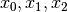 and
queens. Our search strategy is to
choose the first variable with a non empty domain with a least two elements (Solver::CHOOSE_FIRST_UNBOUND).
Once this variable is chosen, we give it the smallest possible value contained in its domain (Solver::ASSIGN_MIN_VALUE).
We have variables 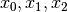 and  introduced in that order. The 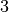 constraints
are all AllDifferent constraints introduced in the following order:
introduced in that order. The 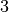 constraints
are all AllDifferent constraints introduced in the following order:
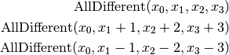
5.4.2.1. The search tree
By reading the file cpviz_nqueens4_basic.txt, we can retrace the search and reconstruct the search tree:

The actual search tree of our search
As you can see, at each node, the solver took a Decision: the left branch to apply the Decision and the right branch to refute this Decision. The leaf nodes in red denote sub-trees that are not worth exploring explicitly: we cannot find any feasible solution along these branches of the tree. The leaf nodes in green denote on the contrary feasible solutions. The nodes are numbered in the order of creation and we can see that the search tree is traversed in pre-order by the solver.
In the file nqeens4.cc, we have printed some statistics about the search:
std::cout << "Number of solutions: " << num_solutions << std::endl;
std::cout << "Failures: " << s.failures() << std::endl;
std::cout << "Branches: " << s.branches() << std::endl;
std::cout << "Backtracks: " << s.fail_stamp() << std::endl;
std::cout << "Stamps: " << s.stamp() << std::endl;
and with size = 4, we get as output:
Number of solutions: 2
Failures: 6
Branches: 10
Backtracks: 9
Stamps: 29
Let’s see if we can deduce these statistics from the search tree. The three first statistics are easy to spot in the tree:
- Number of solutions (2):
- There are indeed two distinct solutions denoted by the two green leafs.
- Failures (6):
- A failure occurs whenever the solver has to backtrack, whether it is because of a real failure (nodes 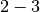 and ) or a success (nodes
and 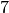). Indeed, when the solver finds a solution, it has to backtrack to find other solutions. The method failures() returns the number of leaves of the search tree. In our case,
.
- Branches (10):
- Number of branches in the tree, indeed
.
The two last statistics are more difficult to understand by only looking at the search tree.
- Backtracks (9):
Because of the way the search is coded, the fail_stamp counter starts already at
before any top level search. There are
. To end the search, a last backtrack[2] is necessary to reach the root node and undo the search which brings the counter to
.
[2] Actually, the very last backtrack happens when the solver is deleted. - Stamps (29):
- This statistic is more an internal statistic than a real indicator of the search. It is related to the queue actions during the search. The queue is responsible for the propagation which occurs when one or more variables domains change. Every time the propagation process is triggered, the stamp counter is increased. Other queue actions also increase this counter. For instance, when the queue is frozen. For a simple search, this statistic is more or less equivalent to the length of a pre-order traversal of the search tree ( in our case). This statistic reflects the amount of work needed by the solver during the search. We refer the curious reader to the source code for more details.
5.4.2.2. Our cpviz output of the search tree
How can we compare the real tree with our cpviz output? The trick is to observe the construction of the tree one node at a time. We construct the real tree node by node from the tree produced by cpviz. The left image is the cpviz output while the right image is the actual tree.
Step 0:
We start with a dummy node. This node is needed in our construction. You’ll see in a moment why.
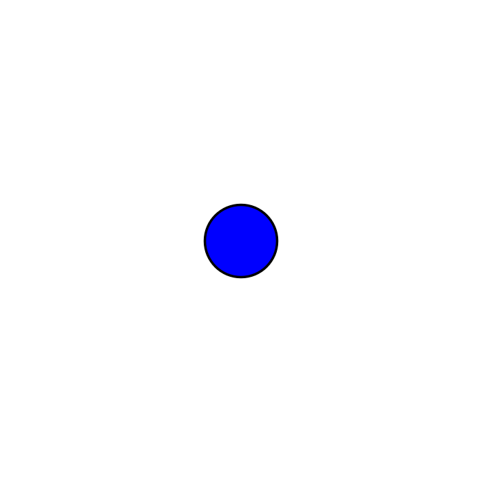Step 1:
Next, we start with the actual root node. As you can see in our cpviz output, the dummy root node doesn’t even
have a name and the little number  next to this non existing name doesn’t mean anything.
next to this non existing name doesn’t mean anything.
Step 2:
You can see in our cpviz output that the solver has applied the Decision 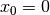
but that it couldn’t decide
if this was a good choice or not. The little number next to the variable name  means that before
the decision was applied, the number of values in its domain was . Indeed: 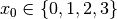 before being
assigned the value .
means that before
the decision was applied, the number of values in its domain was . Indeed: 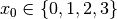 before being
assigned the value .
Step 3:
After having applied the Decision at step 2, the solver now applies the Decision  which
leads, after propagation, to a failure.
which
leads, after propagation, to a failure.
Step 4:
Our cpviz output clearly warns that setting to does not lead to a feasible solution. This can
only mean that the solver tried also to refute the Decision . So we know that the branch 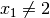
after the branch is leading nowhere. We have to backtrack and to refute the Decision .
We have then a new branch 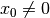 in the real search tree.
Step 5:
We find a feasible solution when 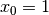. Thus we add the branch and indicate success.
Step 6:
We find a second feasible solution when 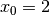. Before we can proceed by applying Decision . we first have to refute the Decision .
Step 7:
We add a tentative branch in the cpviz output. The branch before we applied the Decision 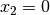 that lead to a feasible solution, so now we know that the solver is trying to refute that decision: 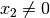.
Step 8:
The final step is the branch 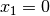 that leads to a failure. This means that when we apply and refute , we get a failure. Thus we know that and 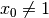 both fail.
5.4.2.3. Propagation
To better understand the search, let’s have a look at the propagation in details. First, we look at the real propagation, then at our cpviz output.
You can find an animated version of the propagation here.
{kind=link}
We start at the root node with
- node 0:
 .
. - We apply the Decision which corresponds to our search strategy.
- node 1: 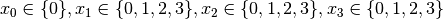
The propagation is done in the following order.
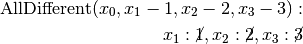

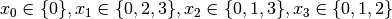
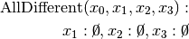

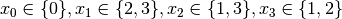. No more propagation is possible. We then apply the Decision
- node 2: 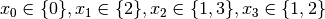.
The propagation is as follow:
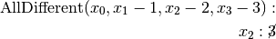

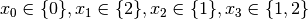.
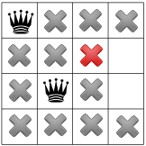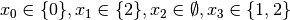. We have a failure as the domain of
 is empty. We backtrack to node
is empty. We backtrack to node  and refute the Decision .
and refute the Decision .
- node 3: 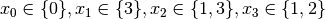.
 is fixed to because we removed the value of its domain
(refuting the Decision ).
is fixed to because we removed the value of its domain
(refuting the Decision ).Propagation:
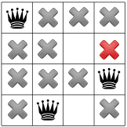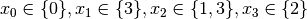.
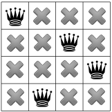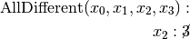
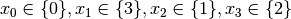.
This is of course not possible and the following propagation detects this impossibility:
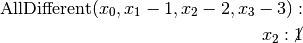
 .
We have again a failure as the domain of is empty. We need
to backtrack to the root node and refute the Decision .
.
We have again a failure as the domain of is empty. We need
to backtrack to the root node and refute the Decision .
- node 4: .
- We apply Decision which complies with our search strategy.
- node 5: .
Propagation:

.
.

 .
.
.
.

.
We have a solution! We have now to backtrack to node
and refute
Decision .
- node 6: .
- We apply the Decision .
- node 7: .
Propagation:
.
.

.
.
.
and we have a second distinct solution! We backtrack to node
and
refute Decision .
- node 8: .
- is fixed because there is only one value left in its domain.
Propagation:

.
. No more propagation. We thus apply our search strategy and apply Decision .
- node 9: .
Propagation:

.
which is impossible as the next propagation shows:
. As the domain of
is empty,
we have failure and have to backtrack to node and refute Decision .
- node 10: .
Propagation:


.
. The empty domain for
indicates
a failure and we have to backtrack... to the root node as we have exhausted the search tree. The search is thus finished
and we have found distinct solutions.
5.4.2.4. Our cpviz output of the propagation
For each step in the construction of the tree in our cpviz output corresponds a visualization of the propagation and the states of the variables. Of course, as we try to limit the number of nodes in the tree, we are constrained to display very little information about the propagation process. In short, if we find
- a try node, we display the final propagation at this node;
- a solution, we display the solution;
- a failure, we display the first failure encountered and the values of the assigned variables.
We also display what variable we focus on next.
Let’s go again through the 9 steps. We display in the left column our cpviz tree output, in the middle column the actual search tree and in the right column our cpviz output of the propagation.
Step 0:
Nothing happens as we add a dummy root node. Notice that the variables are numbered from 1 to 4.
Step 1:
The yellow rectangle tells us that the focus is on variable , which means that at the next step a value will be assigned to this variable.
Step 2:

The red square indicates that the variable was fixed to .
The dark green squares show the propagation. The focus is on variable .
Step 3:
The red rectangle warns of a failure: there is no feasible solution with
and .
Step 4:
There is not much information here: only that the last variable tried
was and that we ended up with a failure.
Step 5:
Solution found.
Step 6:
Solution found.
Step 7:
End of propagation at node 8 and focus on variable .
Step 8:
Failure. The first failure was when .
Google or-tools |
User's Manual
Google search
Welcome
Tutorial examples
Current chapter
5. Defining search primitives: the n-Queens Problem
Previous section
5.3. Basic working of the solver: the search algorithm
Next section
5.5. Basic working of the solver: the phases